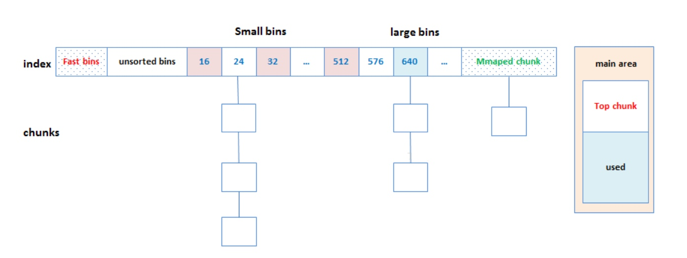

调度器设计
调度器

- sleep和wait是红黑树
- ready和defer是队列
- 最难的是设计这四个状态
- defer是定时器
- wait是read write IO

生命的意义是成为你自己！

bin/kafka-configs.sh --zookeeper zookeeper_host:port --alter --add-config 'leader.replication.throttled.rate=104857600,follower.replication.throttled.rate=104857600' --entity-type brokers --entity-name 0
bin/kafka-configs.sh --zookeeper zookeeper_host:port --alter --add-config 'leader.replication.throttled.replicas=*,follower.replication.throttled.replicas=*' --entity-type topics --entity-name test
bin/kafka-topics.sh --bootstrap-server broker_host:port --delete --topic <topic_name>
kafka-console-consumer.sh --bootstrap-server master:9092 --topic __consumer_offsets --formatter "kafka.coordinator.group.GroupMetadataManager\$GroupMetadataMessageFormatter" --from-beginning




std::recursive_mutex mutex1;
std::lock_guard<std::recursive_mutex> s1(mutex1);
std::lock_guard<std::recursive_mutex> s2(mutex1);
//可以多次调用
for (int i = 0; i < 10000; i++) {
//std::lock_guard<std::timed_mutex> s1(mutex1);
std::chrono::milliseconds timeout(100);
//mutex1.try_lock_until(chrono::steady_clock::now() + timeout)
if (mutex1.try_lock_for(timeout)) {
cout << "get lock" << endl;
msgRecvQueue.push_back(i);
cout << "insert ele " << i << endl;
mutex1.unlock();
} else {
cout << "not get lock sleep " << endl;
std::this_thread::sleep_for(timeout);
}
}

128K 使用mmap mmap() 方式分配的内存，会在释放时直接归还系统，所以每次 mmap 都会发生缺页异常。在内存工作繁忙时，频繁的内存分配会导致大量的缺页异常，使内核的管理负担增大。这也是 malloc 只对大块内存使用 mmap 的原因。
std::future<int> result = std::async(mythread);
cout << "continue...!" << endl;
cout << result.get() << endl;
std::future<int> result = std::async(std::launch::deferred, &A::mythread, &a, val);
std::future<int> result = std::async(std::launch::deferred, &A::mythread, &a, val);
std::packaged_task<int(int)> mypt(mythread2);
std::thread t1(std::ref(mypt), 1);
t1.join();
std::future<int> res = mypt.get_future();
std::packaged_task<int(int)> mypt([](int mypar) {
cout << "thread start " << " thread_id = "
<< std::this_thread::get_id() << endl;
cout << " val " << mypar << endl;
std::chrono::seconds dura(1);
std::this_thread::sleep_for(dura);
return 5;
});
mypt(1);
std::promise<int> myprom;
std::thread t1(mythread3, std::ref(myprom), 180);
t1.join();
std::future<int> ful = myprom.get_future();
auto res = ful.get();
void mythread4(std::future<int>& tmp) {
auto res = tmp.get();
cout << "mythread4 res " << res << endl;
}
std::promise<int> myprom;
std::thread t1(mythread3, std::ref(myprom), 180);
t1.join();
std::future<int> ful = myprom.get_future();
std::thread t2(mythread4, std::ref(ful));